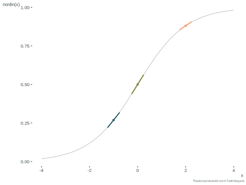

Neural Network
The following example follows Andrew Trask’s old blog post, which is nice because it tries to demonstrate a neural net in very few lines of code, much like this document’s goal.
The data setup is very simple (only 4 observations!), and I keep the Python code essentially identical outside of very slight cosmetic (mostly name/space) changes. For more detail I suggest following the original posts, but I’ll add some context here and there. In addition, see the logistic regression chapter and gradient descent chapter.
- https://iamtrask.github.io/2015/07/12/basic-python-network/
- https://iamtrask.github.io/2015/07/27/python-network-part2/
Example 1
Python
In this initial example, while it can serve as instructive starting point for backpropagation, we’re not really using what most would call a neural net, but rather just an alternative way to estimate a logistic regression. layer_1 in this case is just the linear predictor after a nonlinear transformation (sigmoid).
Note that in this particular example however, that the first column is perfectly correlated with the target y, which would cause a problem if no regularization were applied (a.k.a. separation).
Description of the necessary objects from the blog. These will be consistent throughout the demo.
- X Input dataset matrix where each row is a training example
- y Output dataset matrix where each row is a training example
- layer_0 First Layer of the Network, specified by the input data
- layer_1 Second Layer of the Network, otherwise known as the hidden layer
- synapse_0 First layer of weights, Synapse 0, connecting layer_0 to layer_1.
- * Elementwise multiplication, so two vectors of equal size are multiplying corresponding values 1-to-1 to generate a final vector of identical size.
- - Elementwise subtraction, so two vectors of equal size are subtracting corresponding values 1-to-1 to generate a final vector of identical size.
- x.dot(y) If x and y are vectors, this is a dot product. If both are matrices, it’s a matrix-matrix multiplication. If only one is a matrix, then it’s vector matrix multiplication.
import numpy as np
# sigmoid function
def nonlin(x, deriv = False):
if(deriv == True):
return x*(1 - x)
return 1/(1 + np.exp(-x))
# input dataset
X = np.array([
[0, 0, 1],
[0, 1, 1],
[1, 0, 1],
[1, 1, 1]
])
# output dataset
y = np.array([[0, 0, 1, 1]]).T
# seed random numbers to make calculation
# deterministic (just a good practice)
np.random.seed(1)
# initialize weights randomly with mean 0 (or just use np.random.uniform)
synapse_0 = 2*np.random.random((3, 1)) - 1
for iter in np.arange(10000):
# forward propagation
layer_0 = X
layer_1 = nonlin(np.dot(layer_0, synapse_0))
# how much did we miss?
layer_1_error = y - layer_1
# multiply how much we missed by the
# slope of the sigmoid at the values in layer_1
l1_delta = layer_1_error * nonlin(layer_1, True)
# update weights
synapse_0 += np.dot(layer_0.T, l1_delta)
print("Output After Training:")Output After Training:print(np.append(layer_1, y, axis = 1))[[0.00966449 0. ]
[0.00786506 0. ]
[0.99358898 1. ]
[0.99211957 1. ]]R
For R I make a couple changes, but it should be easy to follow from the original Python, and I keep the original comments. I convert the code into a function so that settings can be altered more easily.
X = matrix(
c(0, 0, 1,
0, 1, 1,
1, 0, 1,
1, 1, 1),
nrow = 4,
ncol = 3,
byrow = TRUE
)
# output dataset
y = c(0, 0, 1, 1)
# seed random numbers to make calculation
# deterministic (just a good practice)
set.seed(1)
# initialize weights randomly with mean 0
synapse_0 = matrix(runif(3, min = -1, max = 1), 3, 1)
# sigmoid function
nonlin <- function(x, deriv = FALSE) {
if (deriv)
x * (1 - x)
else
plogis(x)
}
nn_1 <- function(X, y, synapse_0, maxiter = 10000) {
for (iter in 1:maxiter) {
# forward propagation
layer_0 = X
layer_1 = nonlin(layer_0 %*% synapse_0)
# how much did we miss?
layer_1_error = y - layer_1
# multiply how much we missed by the
# slope of the sigmoid at the values in layer_1
l1_delta = layer_1_error * nonlin(layer_1, deriv = TRUE)
# update weights
synapse_0 = synapse_0 + crossprod(layer_0, l1_delta)
}
list(layer_1 = layer_1, layer_1_error = layer_1_error, synapse_0 = synapse_0)
}
fit_nn = nn_1(X, y, synapse_0)
message("Output After Training: \n",
paste0(capture.output(cbind(fit_nn$layer_1, y)), collapse = '\n'))Output After Training:
y
[1,] 0.009670417 0
[2,] 0.007864211 0
[3,] 0.993590571 1
[4,] 0.992115835 1A key takeaway from this demonstration regards the update step. Using the derivative, we are getting the slope of the sigmoid function at the point of interest, e.g. the three points below. If a predicted probability (layer 1) is close to zero or 1, this suggests the prediction ‘confidence’ is high, the slopes are shallow, and the result is that there is less need for updating. For the others, e.g. close to x = 0, there will be relatively more updating, as the error will be greater. The last step is to compute the weight updates for each weight for each observation, sum them, and update the weights accordingly. So our update is a function of the error and the slope. If both are small, then there will be little update, but if there is larger error and/or less confident prediction, the result will ultimately be a larger update.

Example 2
In the following example, we have similarly simple data, but technically a bit harder problem to estimate. In this case, y = 1 only if we apply the XOR function to columns 1 and 2. This makes the relationship between inputs and output a nonlinear one.
To account for the nonlinearity we will have two ‘hidden’ layers, the first of four ‘nodes’, and the second a single node, which relates the transformed information to the target variable. In the hidden layer, we can think of each node as a linear combination of the input, with weights represented by paths (in the original post these weights/connections are collectively called ‘synapses’). This is followed by a nonlinear transformation for each node (e.g. sigmoid). The final predictions are a linear combination of the hidden layer, followed by another nonlinear transformation (sigmoid again). The last transformation needs to put the result between 0 and 1, but you could try other transformations for the first hidden layer. In fact sigmoid is rarely used except for the final layer.
Python
For the following, I remove defining layer_0, as it is just the input matrix X. But otherwise, only minor cleanup and more explicit names as before.
import numpy as np
def nonlin(x, deriv = False):
if(deriv == True):
return x*(1 - x)
return 1/(1 + np.exp(-x))
X = np.array([
[0, 0, 1],
[0, 1, 1],
[1, 0, 1],
[1, 1, 1]
])
y = np.array([
[0],
[1],
[1],
[0]
])
np.random.seed(1)
# randomly initialize our weights with mean 0
synapse_0 = 2*np.random.random((3, 4)) - 1
synapse_1 = 2*np.random.random((4, 1)) - 1
for j in np.arange(30000):
# Feed forward through layers 0, 1, and 2
layer_1 = nonlin(np.dot(X, synapse_0))
layer_2 = nonlin(np.dot(layer_1, synapse_1))
# how much did we miss the target value?
layer_2_error = y - layer_2
if (j% 10000) == 0:
print("Error:" + str(np.mean(np.abs(layer_2_error))))
# in what direction is the target value?
# were we really sure? if so, don't change too much.
layer_2_delta = layer_2_error*nonlin(layer_2, deriv=True)
# how much did each layer_1 value contribute to the layer_2 error (according to the weights)?
layer_1_error = layer_2_delta.dot(synapse_1.T)
# in what direction is the target layer_1?
# were we really sure? if so, don't change too much.
layer_1_delta = layer_1_error * nonlin(layer_1, deriv=True)
synapse_1 += layer_1.T.dot(layer_2_delta)
synapse_0 += X.T.dot(layer_1_delta)Error:0.4964100319027255
Error:0.008584525653247153
Error:0.005789459862507812print('Final error: ' + str(np.round(np.mean(np.abs(layer_2_error)), 5)))Final error: 0.00463np.round(layer_1, 3)array([[0.696, 0.124, 0.923, 0.996],
[0.18 , 0. , 0.017, 0.893],
[0.995, 0.888, 0.023, 0.822],
[0.947, 0.026, 0. , 0.122]])np.round(np.append(layer_2, y, axis = 1), 3)array([[0.004, 0. ],
[0.995, 1. ],
[0.996, 1. ],
[0.006, 0. ]])np.round(synapse_0, 3)array([[ 4.407, 4.028, -6.225, -4.092],
[-2.342, -5.706, -6.53 , -3.506],
[ 0.826, -1.959, 2.488, 5.623]])np.round(synapse_1, 3)array([[ -6.611],
[ 6.857],
[-10.069],
[ 7.501]])R
In general, different weights can ultimately produce similar predictions, and combinations for a particular node are arbitrary. For example, node 1 in one network might become more like node 3 on a separate run with different starting points. So things are somewhat more difficult to compare across runs, let alone across different tools. However, what matters more is the final prediction, and you should see essentially the same result for R and Python. Again we create a function for repeated use.
X = matrix(
c(0, 0, 1,
0, 1, 1,
1, 0, 1,
1, 1, 1),
nrow = 4,
ncol = 3,
byrow = TRUE
)
y = matrix(as.integer(xor(X[,1], X[,2])), ncol = 1) # make the relationship explicit
set.seed(1)
# or do randomly in same fashion
synapse_0 = matrix(runif(12, -1, 1), 3, 4)
synapse_1 = matrix(runif(12, -1, 1), 4, 1)
# synapse_0
# synapse_1
nn_2 <- function(
X,
y,
synapse_0_start,
synapse_1_start,
maxiter = 30000,
verbose = TRUE
) {
synapse_0 = synapse_0_start
synapse_1 = synapse_1_start
for (j in 1:maxiter) {
layer_1 = plogis(X %*% synapse_0) # 4 x 4
layer_2 = plogis(layer_1 %*% synapse_1) # 4 x 1
# how much did we miss the target value?
layer_2_error = y - layer_2
if (verbose && (j %% 10000) == 0) {
message(glue::glue("Error: {mean(abs(layer_2_error))}"))
}
# in what direction is the target value?
# were we really sure? if so, don't change too much.
layer_2_delta = (y - layer_2) * (layer_2 * (1 - layer_2))
# how much did each l1 value contribute to the l2 error (according to the weights)?
layer_1_error = layer_2_delta %*% t(synapse_1)
# in what direction is the target l1?
# were we really sure? if so, don't change too much.
layer_1_delta = tcrossprod(layer_2_delta, synapse_1) * (layer_1 * (1 - layer_1))
# update
synapse_1 = synapse_1 + crossprod(layer_1, layer_2_delta)
synapse_0 = synapse_0 + crossprod(X, layer_1_delta)
}
list(
layer_1_error = layer_1_error,
layer_2_error = layer_2_error,
synapse_0 = synapse_0,
synapse_1 = synapse_1,
layer_1 = layer_1,
layer_2 = layer_2
)
}With function in place, we’re ready to try it out.
fit_nn = nn_2(
X,
y,
synapse_0_start = synapse_0,
synapse_1_start = synapse_1,
maxiter = 30000
)Error: 0.0105538166393651Error: 0.00729252475321203Error: 0.0058973637409426glue::glue('Final error: {round(mean(abs(fit_nn$layer_2_error)), 5)}')Final error: 0.0059round(fit_nn$layer_1, 3) [,1] [,2] [,3] [,4]
[1,] 0.259 0.889 0.364 0.445
[2,] 0.000 0.037 0.978 0.030
[3,] 0.946 1.000 0.984 0.020
[4,] 0.016 0.984 1.000 0.001round(cbind(fit_nn$layer_2, y), 3) [,1] [,2]
[1,] 0.002 0
[2,] 0.993 1
[3,] 0.994 1
[4,] 0.008 0round(fit_nn$synapse_0, 3) [,1] [,2] [,3] [,4]
[1,] 3.915 7.364 4.705 -3.669
[2,] -6.970 -5.351 4.337 -3.242
[3,] -1.050 2.079 -0.559 -0.221round(fit_nn$synapse_1, 3) [,1]
[1,] 10.988
[2,] -10.733
[3,] 5.576
[4,] -2.987Comparison
Let’s compare our results to the nnet package that comes with the base R installation. Note that it will include intercepts (a.k.a. biases) for each node, so it’s estimating more parameters in total.
fit_nnet = nnet::nnet(X, y, size = 4)# weights: 21
initial value 1.152323
iter 10 value 0.998588
iter 20 value 0.558917
final value 0.000000
convergeddata.frame(coef(fit_nnet)) coef.fit_nnet.
b->h1 5320.330
i1->h1 -49025.055
i2->h1 -15547.859
i3->h1 5320.491
b->h2 12329.141
i1->h2 -13914.491
i2->h2 -13782.790
i3->h2 12328.763
b->h3 22292.322
i1->h3 -18601.227
i2->h3 34270.828
i3->h3 22292.567
b->h4 22269.956
i1->h4 -3504.603
i2->h4 30916.959
i3->h4 22269.420
b->o 34687.508
h1->o -37130.643
h2->o 32075.031
h3->o -36018.926
h4->o -18446.081fitted(fit_nnet) [,1]
[1,] 0
[2,] 1
[3,] 1
[4,] 0Example 3
The next example follows the code from the second post listed in the introduction. A couple of changes are seen here. We have a notably larger hidden layer (size 32). We also split the previous nonlin function into two parts. And finally, we add an alpha parameter, which is akin to the learning rate in gradient descent (stepsize in our previous implementation). It basically puts a control on the gradient so that we hopefully don’t make too large a jump in our estimated weights on each update. However, we can show what will happen as a result of setting the parameter to small and large values.
Python
As before, I make names more explicit, and other very minor updates to the original code.
import numpy as np
alphas = [0.001, 0.01, 0.1, 1, 10, 100, 1000]
hidden_size = 32
# compute sigmoid nonlinearity
def sigmoid(x):
output = 1/(1 + np.exp(-x))
return output
# convert output of sigmoid function to its derivative
def sigmoid_output_to_derivative(output):
return output*(1 - output)
X = np.array([
[0, 0, 1],
[0, 1, 1],
[1, 0, 1],
[1, 1, 1]
])
y = np.array([
[0],
[1],
[1],
[0]
])
for alpha in alphas:
print("\nTraining With Alpha:" + str(alpha))
np.random.seed(1)
# randomly initialize our weights with mean 0
synapse_0 = 2*np.random.random((3, hidden_size)) - 1
synapse_1 = 2*np.random.random((hidden_size, 1)) - 1
for j in np.arange(30000):
# Feed forward through layers input, 1, and 2
layer_1 = sigmoid(np.dot(X, synapse_0))
layer_2 = sigmoid(np.dot(layer_1, synapse_1))
# how much did we miss the target value?
layer_2_error = layer_2 - y
if (j% 10000) == 0:
print("Error after "+ str(j) +" iterations:" +
str(np.mean(np.abs(layer_2_error))))
# in what direction is the target value?
# were we really sure? if so, don't change too much.
layer_2_delta = layer_2_error*sigmoid_output_to_derivative(layer_2)
# how much did each l1 value contribute to the l2 error (according to the weights)?
layer_1_error = layer_2_delta.dot(synapse_1.T)
# in what direction is the target l1?
# were we really sure? if so, don't change too much.
layer_1_delta = layer_1_error * sigmoid_output_to_derivative(layer_1)
synapse_1 -= alpha * (layer_1.T.dot(layer_2_delta))
synapse_0 -= alpha * (X.T.dot(layer_1_delta))
Training With Alpha:0.001
Error after 0 iterations:0.49643992250078794
Error after 10000 iterations:0.49104946812904954
Error after 20000 iterations:0.4849763070274596
Training With Alpha:0.01
Error after 0 iterations:0.49643992250078794
Error after 10000 iterations:0.35637906164802124
Error after 20000 iterations:0.14693984546475994
Training With Alpha:0.1
Error after 0 iterations:0.49643992250078794
Error after 10000 iterations:0.030540490838554993
Error after 20000 iterations:0.019063872533418427
Training With Alpha:1
Error after 0 iterations:0.49643992250078794
Error after 10000 iterations:0.007360522342493724
Error after 20000 iterations:0.004972517050388164
Training With Alpha:10
Error after 0 iterations:0.49643992250078794
Error after 10000 iterations:0.0022489756615412743
Error after 20000 iterations:0.0015326357139237015
Training With Alpha:100
Error after 0 iterations:0.49643992250078794
Error after 10000 iterations:0.5
Error after 20000 iterations:0.5
Training With Alpha:1000
Error after 0 iterations:0.49643992250078794
Error after 10000 iterations:0.5
Error after 20000 iterations:0.5Since alpha = 10 seems reasonable, let’s inspect the results just for that. Note that this value being the ‘best’ likely won’t hold on another random run, and in general we would assess this hyperparameter using cross-validation or other means.
import numpy as np
alpha = 10
# randomly initialize our weights with mean 0
np.random.seed(1)
synapse_0 = 2*np.random.random((3, hidden_size)) - 1
synapse_1 = 2*np.random.random((hidden_size, 1)) - 1
for j in np.arange(30000):
# Feed forward through layers input, 1, and 2
layer_1 = sigmoid(np.dot(X, synapse_0))
layer_2 = sigmoid(np.dot(layer_1, synapse_1))
# how much did we miss the target value?
layer_2_error = layer_2 - y
# in what direction is the target value?
# were we really sure? if so, don't change too much.
layer_2_delta = layer_2_error*sigmoid_output_to_derivative(layer_2)
# how much did each l1 value contribute to the l2 error (according to the weights)?
layer_1_error = layer_2_delta.dot(synapse_1.T)
# in what direction is the target l1?
# were we really sure? if so, don't change too much.
layer_1_delta = layer_1_error * sigmoid_output_to_derivative(layer_1)
synapse_1 -= alpha * (layer_1.T.dot(layer_2_delta))
synapse_0 -= alpha * (X.T.dot(layer_1_delta))
np.append(np.round(layer_2, 4), y, axis = 1)array([[0.0011, 0. ],
[0.9989, 1. ],
[0.9989, 1. ],
[0.0015, 0. ]])R
The following has little to no modification, but again creates a function for easier manipulation of inputs.
# input dataset
X = matrix(
c(0, 0, 1,
0, 1, 1,
1, 0, 1,
1, 1, 1),
nrow = 4,
ncol = 3,
byrow = TRUE
)
# output dataset
y = matrix(c(0, 1, 1, 0), ncol = 1)
alphas = c(0.001, 0.01, 0.1, 1, 10, 100, 1000)
hidden_size = 32
# compute sigmoid nonlinearity
sigmoid = plogis # already part of base R, no function needed
# convert output of sigmoid function to its derivative
sigmoid_output_to_derivative <- function(output) {
output * (1 - output)
}
nn_3 <- function(
X,
y,
hidden_size,
alpha,
maxiter = 30000,
show_messages = FALSE
) {
for (val in alpha) {
if(show_messages)
message(glue::glue("Training With Alpha: {val}"))
set.seed(1)
# randomly initialize our weights with mean 0
synapse_0 = matrix(runif(3 * hidden_size, -1, 1), 3, hidden_size)
synapse_1 = matrix(runif(hidden_size), hidden_size, 1)
for (j in 1:maxiter) {
# Feed forward through layers input, 1, and 2
layer_1 = sigmoid(X %*% synapse_0)
layer_2 = sigmoid(layer_1 %*% synapse_1)
# how much did we miss the target value?
layer_2_error = layer_2 - y
if ((j %% 10000) == 0 & show_messages) {
message(glue::glue("Error after {j} iterations: {mean(abs(layer_2_error))}"))
}
# in what direction is the target value?
# were we really sure? if so, don't change too much.
layer_2_delta = layer_2_error * sigmoid_output_to_derivative(layer_2)
# how much did each l1 value contribute to the l2 error (according to the weights)?
layer_1_error = layer_2_delta %*% t(synapse_1)
# in what direction is the target l1?
# were we really sure? if so, don't change too much.
layer_1_delta = layer_1_error * sigmoid_output_to_derivative(layer_1)
synapse_1 = synapse_1 - val * crossprod(layer_1, layer_2_delta)
synapse_0 = synapse_0 - val * crossprod(X, layer_1_delta)
}
}
list(
layer_1_error = layer_1_error,
layer_2_error = layer_2_error,
synapse_0 = synapse_0,
synapse_1 = synapse_1,
layer_1 = layer_1,
layer_2 = layer_2
)
}With function in place, we are now ready to try it out. You can change whether you show the messages or not to compare with the Python. I don’t in this case for the sake of the document, but it won’t be overwhelming if you do interactively, and is recommended. We will also see that alpha = 10 is the better option under the default settings as it was with the Python code. Note that this simple demo code will probably not work well beyond a hidden size of 50 (add more iterations even then).
set.seed(1)
fit_nn = nn_3(
X,
y,
hidden_size = 32,
maxiter = 30000,
alpha = alphas,
show_messages = FALSE
)Let’s rerun at alpha = 10.
set.seed(1)
fit_nn = nn_3(
X,
y,
hidden_size = 32,
alpha = 10,
show_messages = TRUE
)Training With Alpha: 10Error after 10000 iterations: 0.00483502508464005Error after 20000 iterations: 0.00207985328313795Error after 30000 iterations: 0.00152092933542719cbind(round(fit_nn$layer_2, 4), y) [,1] [,2]
[1,] 0.0013 0
[2,] 0.9985 1
[3,] 0.9986 1
[4,] 0.0018 0Comparison
Again we can compare to nnet.
fit_nnet = nnet::nnet(X, y, size = 32)# weights: 161
initial value 1.851187
iter 10 value 0.936564
iter 20 value 0.008594
final value 0.000065
convergedfitted(fit_nnet) [,1]
[1,] 0.0001274475
[2,] 0.9933000550
[3,] 0.9959851931
[4,] 0.0019116939Source
This was never on the original repo but I may put it there eventually.